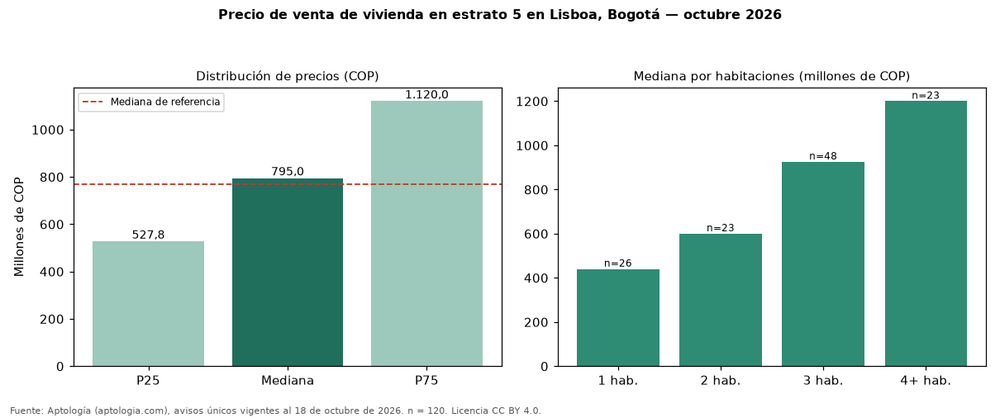

Precio de venta de vivienda en estrato 5 en Lisboa, Bogotá — octubre 2026
Con 120 avisos únicos, el precio mediano de vivienda en estrato 5 en venta en Lisboa, Bogotá es COP 795 millones. Es prácticamente la misma mediana de toda la oferta de venta en Lisboa (COP 770 millones). Por metro cuadrado, la mediana es COP 7.080.996/m² (+2 % frente a COP 6.919.643/m²). Cruzando con la oferta de arriendo equivalente, la rentabilidad bruta implícita es 8,9 % anual. El rango intercuartílico va de COP 528 millones a COP 1,12 mil millones (razón 2,1). Por habitaciones: 1 habitación, COP 440 millones (n = 26); 2 habitaciones, COP 600 millones (n = 23); 3 habitaciones, COP 925 millones (n = 48); 4 o más habitaciones, COP 1,20 mil millones (n = 23). El área mediana es 111 m² (referencia: 112 m²). Datos abiertos CC BY 4.0 de Aptología; fuente y búsqueda de inmuebles: https://www.aptologia.com/estrato-de/bogota/lisboa. Archivos: PDF de 2 páginas, CSV con las cifras y gráfica PNG.

| Avisos únicos | 120 |
|---|---|
| Percentil 25 | COP 527.790.750 |
| Mediana | COP 795.000.000 |
| Percentil 75 | COP 1.120.000.000 |
| Mediana por m² | COP 7.080.995 |
Fuente: avisos vigentes de portales inmobiliarios recopilados por Aptología, deduplicados (mínimo 30 avisos únicos por celda). Precios pedidos, no cerrados. Fecha: 2026-10-18.